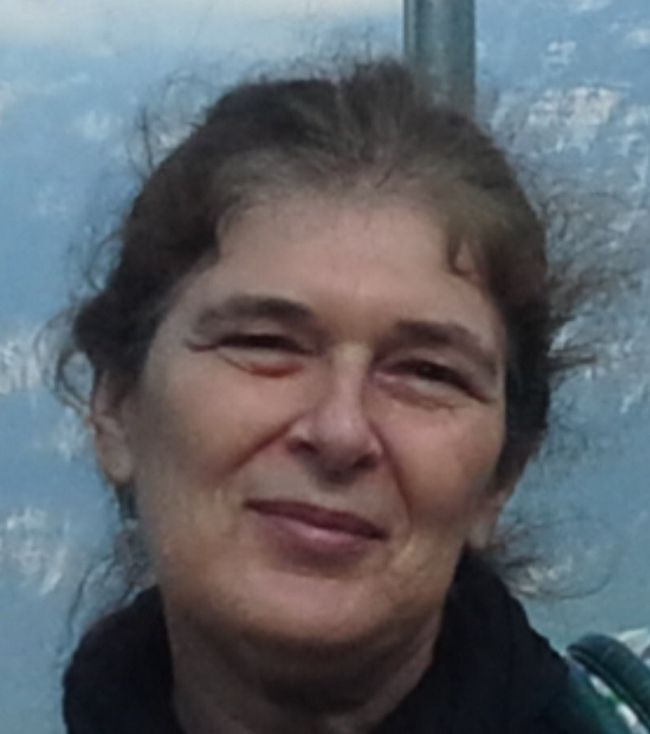

Daniele Gardy

Research
My research interests lie in the analysis of algorithms with its
various applications, and in analytic combinatorics which give a
powerful set of mathematical tools for
these algorithm analyses.
My early research was on
analyzing parameters
of databases (I recently went back to it, for an analysis of B-trees) and on
random allocations.
I then developed a special interest in
quantitative logic, where we look at random
logical formulae from a statistical point of view.
This naturally involves satisfiability problems; from there the transition to analyzing the
performance of
constraint solvers is quite natural.
Another tool that comes handy when modelling satisfiability problems
is
graphs, and I have begun recently to investigate
problems related to the occurrence of patterns.
Projects
Some of the projects in which I have been involved in the past are the French
ANR Blanc
Boole project (2009-13),
of which I was the coordinator, and bilateral european projects
(PHC): several Amadeus projects with the team
Combinatorics and
Algorithms at the
DMG
institute of
T.U. Wien
(Austria); and two Polonium projects (2007-08 and 2011-12) with
the
TCS team at
Jagiellonian University in
Krakow (Poland).
During the academic year 2012-13, I was on a temporary position at
CNRS (délégation), which I spent as a long-term visitor at the
Department of Discrete Mathematics and Geometry (DMG) at TU
Wien.
Publications
In the course of a long-term collaboration with
Brigitte Chauvin (LMV,
Versailles) and
Julien
Clement (GREYC, Caen), we have written (in French) a book (to be published soon by Springer) on the various tree structures that occur in the analysis of
algorithms; their analysis is presented through both analytic combinatorics and probability tools.
You can find
here my list of
publications with sources for some papers and talks, and
there
its (possibly incomplete) version according to DBLP.
Some research papers (including a preliminary version of our book) are also available on
Hal.
Former PhD students
- Cecile Mailler (2010-13), co-advisorship with Brigitte Chauvin; currently at Bath University.
- Antoine Genitrini (2006-09), co-advisorship with Herve Fournier; currently associate professor at the University of Paris 6.
Recent and current collaborators
Resources
Teaching
I am a professor of Computer Science at the Computer Science department (http://info.iut-velizy.uvsq.fr/) of the IUT of Velizy (http://www.iut-velizy.uvsq.fr/), which is part of the University of Versailles Saint-Quentin.
I teach mostly programming and algorithms.
Contact
David Lab, UFR of Sciences, University of Versailles-Saint Quentin. 45 avenue des Etats-Unis, 78035 Versailles (cedex). France
mail : prenom_dot_nom_at_uvsq_dot_fr